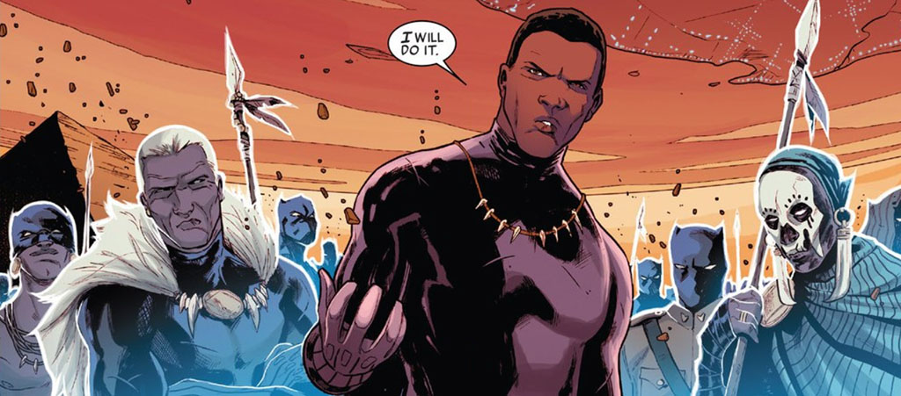

Sobre
Pantera Negra é um super-herói das histórias em quadrinhos publicadas pela Marvel Comics, cuja identidade secreta é a de T'Challa, rei de Wakanda, um reino fictício na África. O personagem foi criado pelo escritor e editor Stan Lee e pelo escritor e ilustrador Jack Kirby, aparecendo pela primeira vez em Fantastic Four # 52 (julho de 1966) na Era de Prata das histórias em quadrinhos. Além de possuir habilidades aprimoradas alcançadas através de um antigo ritual de Wakanda, T'Challa também conta com seu intelecto genial, treinamento físico rigoroso, habilidade em artes marciais, acesso a tecnologias avançadas e riqueza para combater seus inimigos. Pantera Negra também é conhecido por seu relacionamento com a super-heroína Tempestade dos X-Men. Embora os dois fossem casados e se envolvessem em inúmeras batalhas, suas lealdades colocariam uma pressão sobre o relacionamento que levaria a um eventual divórcio.
Além disso, o Pantera Negra é o primeiro super-herói de ascendência africana criado por uma editora mainstream de quadrinhos norte-americanos, que estreou anos antes dos super-heróis afro-americanos, como o Falcão (1969), Luke Cage (1972) e Blade (1973) da Marvel Comics ou o Lanterna Verde John Stewart, da DC Comics(1971). O arco de história do Pantera Negra, que passou por treze números da revistas Jungle Action, é considerado o primeiro romance gráfico da Marvel Comics. Em um enredo, o manto da Pantera Negra é usado por Kasper Cole, um policial mestiço da cidade de Nova York. Começando como um imitador, Cole assumiria o nome de Tigre Branco e se tornaria um aliado de T'Challa. O manto do Pantera Negra e a liderança de Wakanda também foi dado à meia-irmã de T'Challa, Shuri, por um momento em que ele precisava se recuperar de ferimentos críticos que possuía.